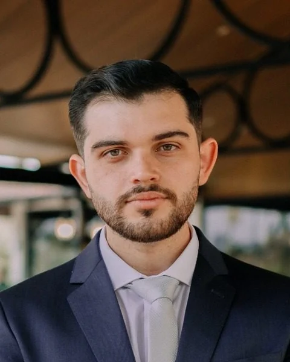

Etapa 1
Primeiro contato
Você descreve a situação pelo WhatsApp, no horário que for melhor para você.
Advocacia em Criciúma e no Sul de Santa Catarina
Atuação em vícios construtivos, imóveis na planta, condomínios e regularização de imóveis, além de direito civil e do trabalho.
De Oliveira Sociedade Individual de Advocacia, registro OAB/SC nº 12940

O escritório
Questões envolvendo imóveis costumam passar por contratos, laudos, projetos e normas técnicas. O escritório atua nessas demandas em Criciúma e no Sul de Santa Catarina, com atendimento online e reuniões presenciais agendadas.
Áreas de atuação
Cada caso depende dos documentos e das circunstâncias. Abaixo, uma explicação breve do que cada matéria envolve. Ao clicar, abre-se um artigo informativo sobre o tema.
Infiltrações, fissuras e falhas de impermeabilização em imóveis novos, com análise da responsabilidade da construtora e das medidas possíveis.
Atraso na entrega, rescisão do contrato e devolução de valores, nos termos da Lei 13.786/2018.
Assessoria a condomínios, inclusive em defeitos nas áreas comuns e na relação com a construtora após a entrega do prédio.
Usucapião judicial e extrajudicial e regularização registral de imóveis urbanos.
Contratos, indenizações, cobranças e demais demandas cíveis.
Atuação em reclamatórias trabalhistas.
Formação
Rafael de Oliveira concluiu em 2024 a graduação em Direito pela Universidade do Extremo Sul Catarinense (Unesc), em Criciúma, com trabalho de conclusão sobre os limites da contratação temporária no serviço público, e é inscrito na Ordem dos Advogados do Brasil, Seccional de Santa Catarina.
Antes disso, em 2019, concluiu o curso técnico em Edificações no CEDUP Abílio Paulo, formação voltada à construção civil, que abrange leitura de projetos, materiais, métodos construtivos e normas técnicas. Desse percurso vem a dedicação do escritório às questões que envolvem imóveis e construção.
Atendimento
O atendimento é online, para todo o Sul catarinense. Quando a reunião precisa ser presencial, ela é agendada em Criciúma, com hora marcada.
Você descreve a situação pelo WhatsApp, no horário que for melhor para você.
Contrato, laudos, fotos dos defeitos e mensagens trocadas são enviados digitalmente, sem deslocamento.
Por videochamada ou, quando necessário, presencialmente em Criciúma, com hora marcada.
Com a análise feita, você recebe a orientação sobre os caminhos possíveis e o acompanhamento de cada etapa.
Criciúma, Içara, Urussanga, Orleans, Araranguá, Sombrio, Turvo, Ermo, Tubarão, Laguna e demais municípios do Sul de Santa Catarina.
Perguntas frequentes
Respostas gerais e informativas. Elas não substituem a análise do caso concreto.
Em regra, sim. O art. 618 do Código Civil prevê que o construtor responde por cinco anos pela solidez e segurança da obra, e o Código de Defesa do Consumidor também protege o comprador contra vícios do imóvel. O prazo para agir depende do tipo de defeito e de quando ele foi percebido, por isso convém registrar os problemas com fotos, laudos e protocolos de reclamação assim que surgirem.
A Lei 13.786/2018 admite cláusula de tolerância de até 180 dias. Passado esse prazo, o comprador pode pedir a rescisão com devolução dos valores pagos ou manter o contrato com indenização pelo período de atraso, conforme o caso.
O distrato é regulado pela Lei 13.786/2018, que limita quanto a incorporadora pode reter. A devolução depende do contrato, do regime da incorporação e de quem deu causa à rescisão.
Sim. O condomínio, representado pelo síndico, tem legitimidade para buscar a reparação de vícios nas áreas comuns, como fachadas, telhados, impermeabilização e garagens. A assembleia costuma deliberar sobre a contratação de laudo técnico e das medidas a adotar.
Pode ser possível por usucapião, judicial ou em cartório. Na usucapião extraordinária, o art. 1.238 do Código Civil exige posse mansa e pacífica por 15 anos, prazo que cai para 10 anos quando o possuidor mora no imóvel ou fez nele obras ou serviços produtivos.
Contato